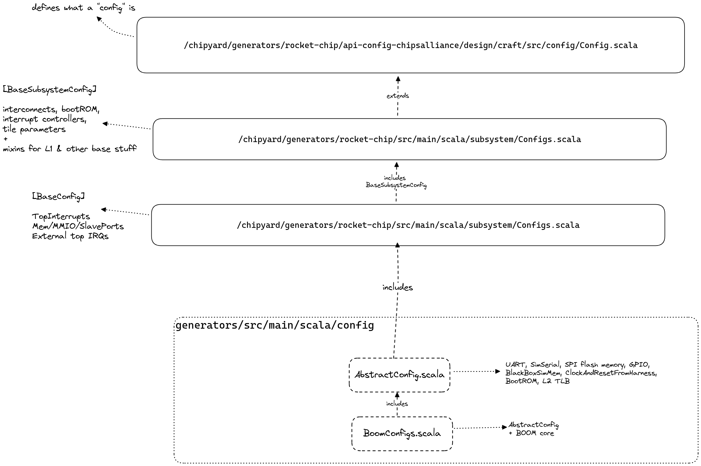
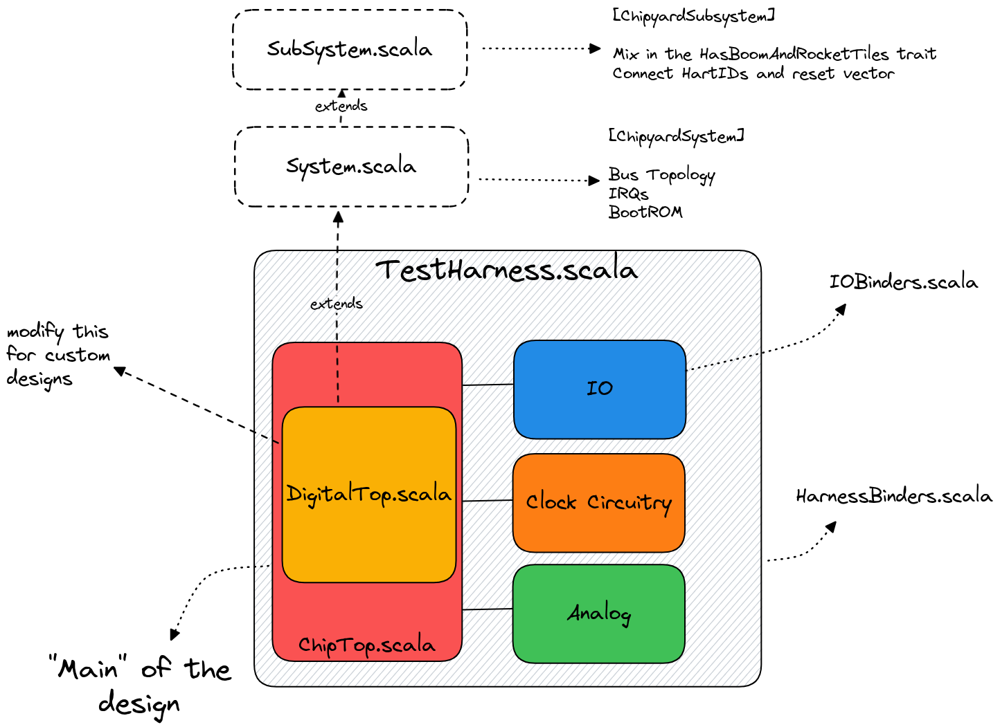
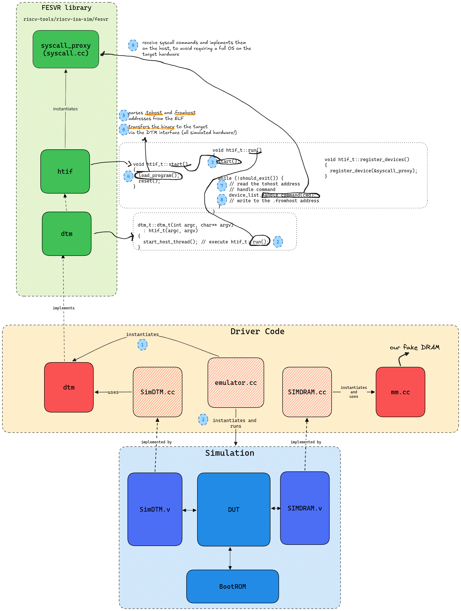
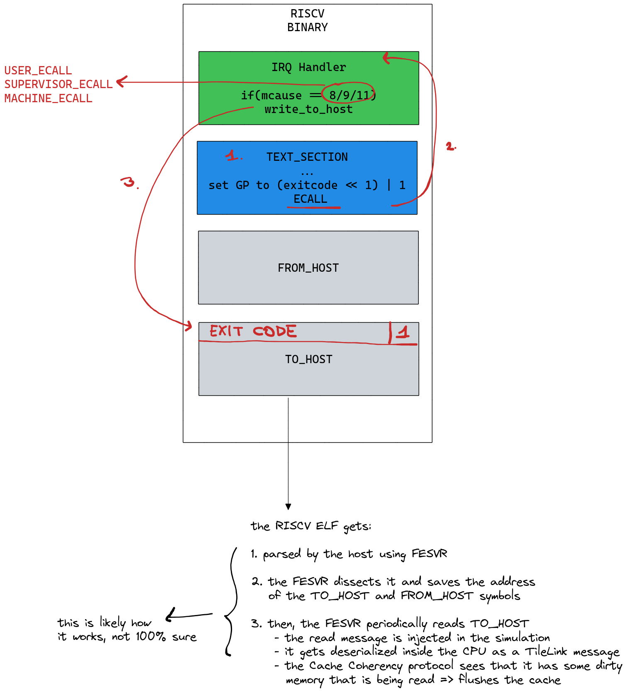

Build System Deep Dive
Additional stuff I discovered during long nights of staring at the codebase.
Chipyard Configs – Deep Dive
As we said, the build system uses configs to let the user define which hardware components to use and how to connect them. Configs are divided into different “fragments” scattered around the codebase. Let’s look at the ones used for BOOM:

We start from
BoomConfigs.scala(in the chipyard repo)class LargeBoomV3Config extends Config( new boom.v3.common.WithNLargeBooms(1) ++ new chipyard.config.WithSystemBusWidth(128) ++ new chipyard.config.AbstractConfig)
NOTE Configs are applied bottom to top
AbstractConfigis defined here and makes sure that all the off-core components are included in the design (e.g. BootROM, SystemBus, Periphery Bus, Memory Bus, inclusive caches, IO Cells, peripherals etc ). It instantiates also theTestHarnesspart of the chip, which is only used when testing the device. Here’s an overview (most parts are omitted since the config is quite big)class AbstractConfig extends Config( new chipyard.harness.WithUARTAdapter ++ // Fake UART module that prints values to stdio new chipyard.harness.WithBlackBoxSimMem ++ // Fake DRAM that simulates loading and storing new chipyard.harness.WithSimTSIOverSerialTL ++ // "Tethered Serial Interface" new chipyard.harness.WithClockFromHarness ++ // clock controlled by harness new chipyard.harness.WithResetFromHarness ++ // reset controlled by harness new chipyard.config.WithBootROM ++ // use default bootrom new testchipip.boot.WithBootAddrReg ++ // add a boot-addr-reg for configurable boot address new freechips.rocketchip.subsystem.WithNExtTopInterrupts(0) ++ // external interrupts new testchipip.soc.WithMbusScratchpad(base = 0x08000000, // add 64 KiB on-chip scratchpad size = 64 * 1024) ++ // ** omitted ** new freechips.rocketchip.system.BaseConfig )
freechips.rocketchip.system.BaseConfigcan be found hereclass BaseConfig extends Config( new WithDefaultMemPort ++ new WithDefaultMMIOPort ++ new WithDefaultSlavePort ++ new WithTimebase(BigInt(1000000)) ++ // 1 MHz new WithDTS("freechips,rocketchip-unknown", Nil) ++ new WithNExtTopInterrupts(2) ++ new BaseSubsystemConfig )
BaseSubsystemConfigcan be found hereclass BaseSubsystemConfig extends Config ((site, here, up) => { case BootROMLocated(InSubsystem) => Seq(BootROMParams(contentFileName = SystemFileName("./bootrom/bootrom.img"))) // ** other configs omitted ** })
Note that the BootROM contents can be found here https://github.com/ucb-bar/testchipip/blob/5dca05bef9a9d7b135e18543379bc782df80ce40/src/main/resources/testchipip/bootrom/bootrom.S
WithNLargeBoomsis defined in the boom repo. Note that anything starting with “With” is called a config mixin, and be defined in either the BOOM repo or the RocketChip repo (or any other generator repo for that matter).class WithNLargeBooms(n: Int = 1) extends Config( new WithTAGELBPD ++ // Default to TAGE-L BPD new Config((site, here, up) => { case TilesLocated(InSubsystem) => { val prev = up(TilesLocated(InSubsystem), site) val idOffset = up(NumTiles) (0 until n).map { i => BoomTileAttachParams( tileParams = BoomTileParams( core = BoomCoreParams( fetchWidth = 8, decodeWidth = 3, numRobEntries = 96, issueParams = Seq( IssueParams(issueWidth=1, numEntries=16, iqType=IQT_MEM.litValue, dispatchWidth=3), IssueParams(issueWidth=3, numEntries=32, iqType=IQT_INT.litValue, dispatchWidth=3), IssueParams(issueWidth=1, numEntries=24, iqType=IQT_FP.litValue , dispatchWidth=3)), numIntPhysRegisters = 100, numFpPhysRegisters = 96, numLdqEntries = 24, numStqEntries = 24, maxBrCount = 16, numFetchBufferEntries = 24, ftq = FtqParameters(nEntries=32), fpu = Some(freechips.rocketchip.tile.FPUParams(sfmaLatency=4, dfmaLatency=4, divSqrt=true)) ), dcache = Some( DCacheParams(rowBits = 128, nSets=64, nWays=8, nMSHRs=4, nTLBWays=16) ), icache = Some( ICacheParams(rowBits = 128, nSets=64, nWays=8, fetchBytes=4*4) ), tileId = i + idOffset ), crossingParams = RocketCrossingParams() ) } ++ prev } case NumTiles => up(NumTiles) + n }) )
Building the Verilated Simulation – Deep Dive
Our quick start suggested to run make CONFIG=LargeBoomV3Config.
The complete list of makefile variables can be found here: https://chipyard.readthedocs.io/en/latest/Simulation/Software-RTL-Simulation.html#makefile-variables-and-commands.
The default values for these variables can be found in the chipyard repo, in variables.mk:
SBT_PROJECT ?= chipyard
MODEL ?= TestHarness
VLOG_MODEL ?= $(MODEL)
MODEL_PACKAGE ?= chipyard.harness
CONFIG ?= RocketConfig
CONFIG_PACKAGE ?= $(SBT_PROJECT)
GENERATOR_PACKAGE ?= $(SBT_PROJECT)
TB ?= TestDriver
TOP ?= ChipTop
Chisel to Verilog
The Chisel → Verilog step is defined in common.mk (target named verilog).
This step basically does the following:
Instantiates
TestHarness, which is defined as the “MODEL” in the MakefileTestHarness instantiates ChipTop
ChipTop instantiates DigitalTop
DigitalTop inherits from System
System inherits from SubSystem
All of these instantiations take into account what is defined in the selected config.

The result will be a big Verilog file containing TestHarness as its “top”.
Verilog → C++ → Binary
The “Verilation” step is the act of using Verilator to transform the Verilog source into a C++ object.
verilator is invoked in
sims/verilator/makefileThis will generate a lot of files.
VTestHarness.hwill contain the simulation object used by the testbenchTogether with generating C code that represents the verilog source, verilator also transfers a bunch of C++ sources that implement Verilog modules used only during simulation (see previous comment on DPI-C)
The default C++ simulation driver can be found in https://github.com/chipsalliance/rocket-chip/blob/8f1e33b253e3bce741861c0a2e3ba8b7ff85b292/src/main/resources/csrc/emulator.cc
Finally, Verilator generates a
VTestHarness.mkwhich is invoked to compile TestHarness + DPI-C code + simulation driver into a single binary
The name of the output binary is defined in sims/verilator/Makefile as
sim_prefix = simulator
sim = $(sim_dir)/$(sim_prefix)-$(MODEL_PACKAGE)-$(CONFIG)
Which in our case will results in
sims/verilator/simulator-chipyard.harness-LargeBoomConfig
Running RISC-V Programs – Deep Dive
The default testbench that gets compiled when you make CONFIG=LargeBoomV3Config reads a RISC-V ELF binary, whose path is provided to the command line, and “runs” it. But actually, there’s a lot going on under the hood.
Starting from RocketChip’s emulator.cc (which can be found here)
Command-line args are parsed and used to initialize the DTM module
dtm = new dtm_t(htif_argc, htif_argv);
Simulation object is built an initialized
TEST_HARNESS *tile = new TEST_HARNESS
A success signal is waited for, either from the DTM module or the hardware itself (see
TestDriver.v).
while (trace_count < max_cycles) {
if (done_reset && (dtm->done() || jtag->done() || tile->io_success))
break;
But what does this DTM module do?
DTM Module
The Debug Transfer Module (DTM) is
initialized in
emulator.ccdefined in C inside of the FESVR (Front-End Server) code, which resides in the riscv-isa-sim code
used in
SimDTM.v, a “black-box” component ofrocket-chipthat is implemented in C (SimDTM.cc)this is connected to the ChipTop by chipyard’s
HarnessBinders
This hardware component basically implements the communication between the “outside world” (host) and the simulated design (target).
Communication between these two worlds follows the HTIF protocol (Berkeley Host-Target Interface).
HTIF Protocol
This is what devs have to say of the HTIF protocol:
The HTIF is the Host/Target Interface, which has the front-end server (riscv-fesvr, running on your host computer) communicating with the target design (Sodor). The riscv-fesvr loads the binary into the Target memory via the HTIF mem ports, and then uses the Control/Status Registers to bring the core out of reset. Once the program is finished, the Target tells the riscv-fesvr it is finished via the tohost CSR and simulation ends.
HTIF is a non-standard tool for Berkeley processors, so there’s no documentation on it. It is going to disappear soon, as the RISC-V platform spec is released and the cores are updated to be self-hosting.
Basically the HTIF protocol defines that the communication between host and guest can be done using two memory regions:
a
.fromhostmemory region that contains data coming from the outside worlda
.tohostmemory region where data is sent to the driver
Most notably, TOHOST commands are:
end of simulation, contains a return code
request that a syscall is performed on the host (e.g. printf)

In the binaries we build with chipyard is all handled by “libgloss”, so that you can write “printf” in your C program, compile it with libgloss, and as a result the program will:
write a specific code to the
.tohostregionwait that the
.fromhostregion contains the resultin the meantime, on the host, the
.tohostregion is continuously probed for commandswhen the
printfcommand is seen, the host executes aprintf

Future Work
While most projects don’t really require this level of in-depth information, it was useful for me to remove a bunch of stuff when building the simulation, to make fuzzing much faster.
In general, the Phantom Trails repo contains a deeply debloated version of this build system that we might want to Dockerize and maybe give to students at some point?